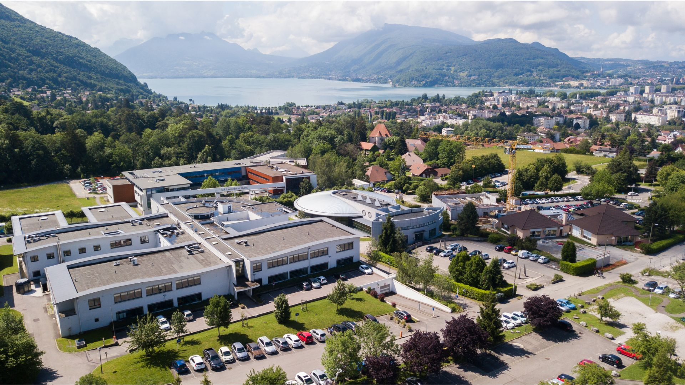
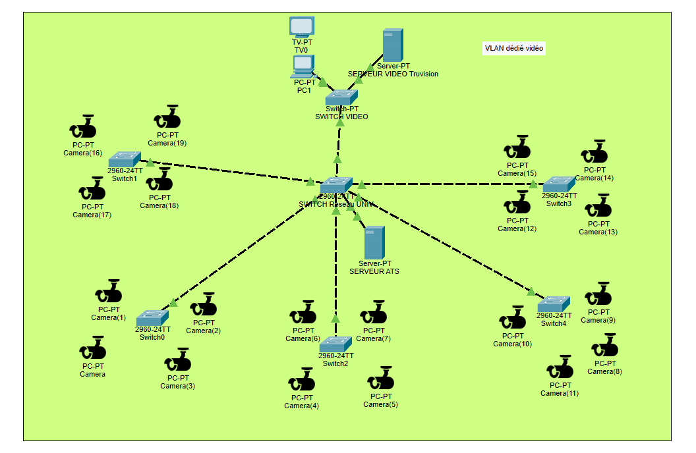

Conception et mise en œuvre d'une infrastructure de surveillance IP complète pour le campus de Jacob-Bellecombette.

01 — Contexte
Dans le cadre de sa politique de sécurité, l'Université Savoie Mont Blanc nous a confié la conception et le déploiement d'un système de vidéosurveillance complet pour son campus. La solution devait être performante, parfaitement adaptée aux contraintes du site de Jacob-Bellecombette, et pleinement interopérable avec les dispositifs de contrôle d'accès déjà en place.
Notre mission couvrait l'ensemble du cycle de vie du projet : de l'analyse des besoins jusqu'à la mise en production, en passant par le câblage réseau, la configuration des équipements et les tests de validation.
02 — Référentiel
Ce projet s'inscrit dans trois compétences clés du référentiel BTS SIO :
03 — Déroulement
04 — Analyse
05 — Inventaire
Vue d'ensemble des équipements matériels et des solutions logicielles mobilisés dans le cadre du projet.
06 — Architecture

07 — Retour d'expérience
Ce projet m'a permis de déployer une solution de vidéosurveillance complète, répondant pleinement aux exigences d'un environnement universitaire réel. Placé au cœur du dispositif dès la phase d'analyse, j'ai assumé des responsabilités techniques concrètes de bout en bout — de la conception de l'architecture réseau jusqu'à la recette finale avec le client. Cette expérience a considérablement renforcé mes compétences en administration réseau, en gestion de projet et en communication avec les parties prenantes, tout en me confrontant aux réalités d'un déploiement en conditions opérationnelles.